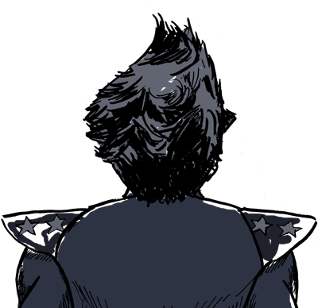
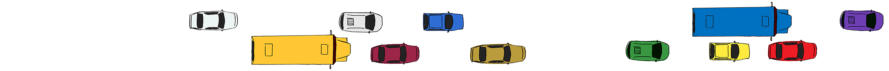
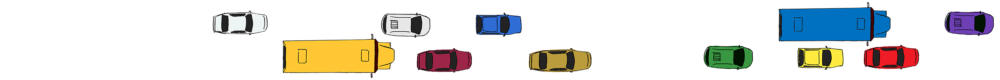
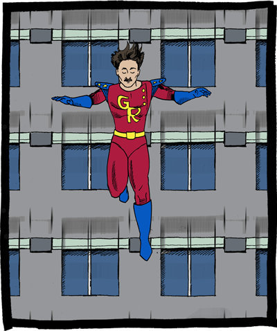
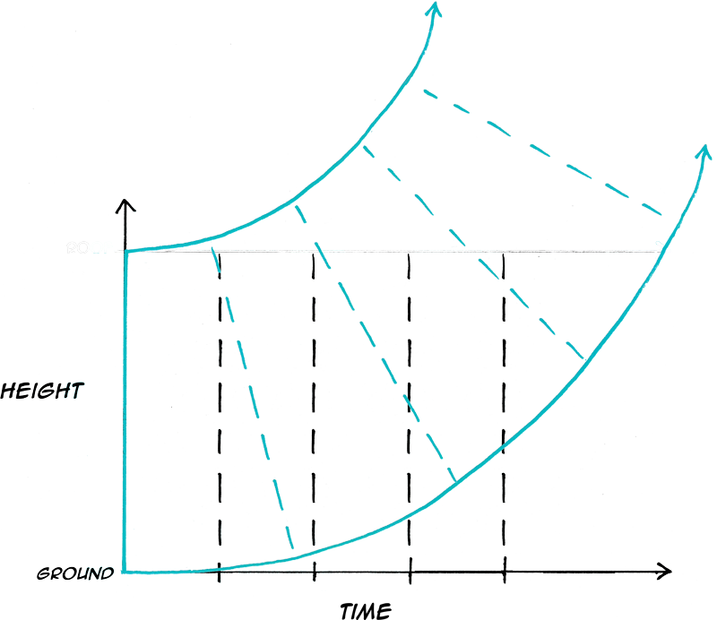
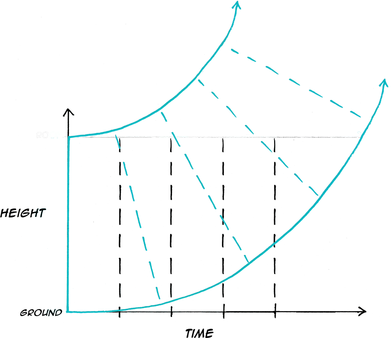

Maecenas sed diam eget risus varius blandit sit amet non magna.

scroll down
to begin
to begin
For 100 years, the general theory of relativity has been a pillar of modern physics. The basic idea is so elegant that you don’t need superpowers to understand it.

Begin with Isaac Newton’s first law of motion: An object remains in uniform motion unless acted on by a force. That means if you feel no force you’ll either sit still or glide forever in a straight line at a constant speed.
 


But Albert Einstein asked himself ...

What happens if I step off a roof?

While I’m freefalling I feel weightless. I don’t feel any force, even as I accelerate toward the ground!
Einstein had landed inside a paradox. An object that feels no force should travel at a constant speed. But something accelerating because of gravity feels no force. Einstein realized that if he resolved the paradox, he might explain the origins of gravity.
This is the happiest thought in my life!


Einstein realized that Massive things like Earth warp spacetime. A freefalling object then follows the straightest possible path in spacetime. So—even though that path doesn’t look straight to us—the object experiences no force.
 


scene 7: cosmos pan and animated svg